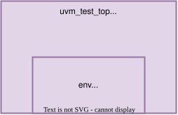
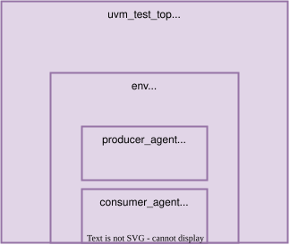

Instance Hierarchy
The uvm_components of a pyuvm testbench form an instance hierarchy. It
describes the parent-child relationships between all uvm_components in a
testbench.
Objects derived from uvm_object are not part of the instance hierarchy.
Components, parents, and children
When a uvm_component is created using the factory with the create()
class method, the name and parent of the component are set.
class default_test(uvm_test):
...
def build_phase(self):
...
self.env = env.create(
name = "env",
parent = self,
)
This creates a environment component with the name env as a child of the
test. The instance of the test in a pyuvm testbench is created by uvm_root
and is always named uvm_test_top.


Fig. 1 The env component is a child of uvm_test_top.
Instance paths
An instance path is the dot-separated sequence of instance names from the top
component (uvm_test_top) to a particular component.


Fig. 2 Deeper nested instance hierarchy with two uvm_agents.
The example from above creates this hierarchy:
uvm_root
└── uvm_test_top
└── env
├── producer_agent
└── consumer_agent
The corresponding full instance paths are:
Component |
Full instance path |
|---|---|
test |
|
environment |
|
producer agent |
|
consumer agent |
|
To get the name or full instance path of a component the following methods are available.
get_name()returns only the local instance name.get_full_name()returns the full instance path.
Wildcard path patterns
Path-based methods such as ConfigDB’s set() and uvm_factory’s
override_instance_by_<type/name> can match a concrete instance path against
a wildcard pattern [1]. This addresses a region of the hierarchy without requiring
a reference to every component in that region. Most importantly this allows the
use of * which matches against everything. This allows a instance override
for example to target all components within the environment:
# In the env: replace all SequenceItem classes with NewSequenceItem
uvm_factory().set_inst_override_by_type(
original_type = SequenceItem,
override_type = NewSequenceItem,
full_inst_path = "uvm_test_top.env.*",
)
Similarly the test can store a value in the ConfigDB for all descendants of
env:
ConfigDB().set(
context = self,
inst_name = "env.*",
field_name = "timeout_cycles",
value = 100,
)